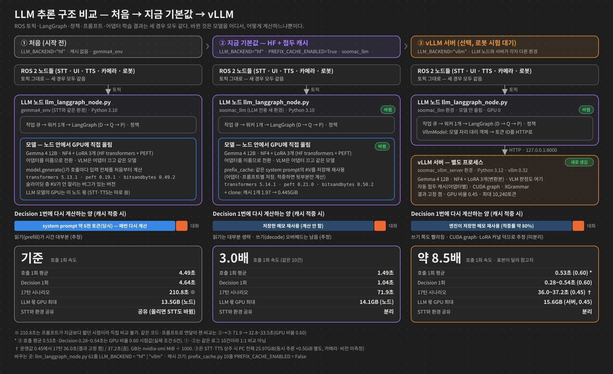

LLM 추론 속도 변천사
같은 모델(Gemma 4 12B, NF4) · 같은 LoRA 어댑터 3개로 로봇의 대답 대기 시간을 줄인 과정과 원리. 숫자는 이 PC의 측정값이고, 추정은 "추정"이라고 적었다.
2026-11-01 · 브랜치 llm_final_2 · 측정 장비 RTX PRO 4500 Blackwell 32GB · 상세 근거: docs/2026-11-01_llm_inference_acceleration.md
(실제 로그 입력. 원래 HF 10건, vLLM 실제 조건 6건이라 1:1 비교는 아님)
1. 최종 속도 비교
LLM 호출 1회 평균 시간 (초, 짧을수록 빠름)
실제 로그 입력, 접두 캐시가 적중하는 호출 기준. vLLM은 측정 건수가 달라(6건) 대략의 크기로 본다. 막대에 마우스를 올리면 설명이 나온다.
표로 보기
| 단계 | 평균(초) | 측정 조건 |
|---|---|---|
| 원래 HF (캐시 없음) | 4.49 | 캐시 적중 10건, 기존 환경 |
| HF + 접두 캐시 + soomac_llm | 1.49 | 같은 10건 |
| vLLM 서버 (NF4) | 0.53 | 실제 조건 6건(입력은 다르고 공통 앞부분만 캐시) |
17턴 시나리오 전체 시간 (초)
사용자 필수 시나리오 17턴을 실제 대화 상태를 누적하며 실행. 회색 막대는 프롬프트가 지금보다 짧던 시점이라 나머지와 직접 비교하면 안 된다.
표로 보기
| 단계 | 17턴(초) | 비고 |
|---|---|---|
| 시작 전: HF, 캐시 없음 | 210.8 | 당시 프롬프트 기준(비교 불가) |
| HF 5.13.1 + 접두 캐시 | 103.0 | 아래 줄과 같은 코드·프롬프트 |
| HF + 캐시 + soomac_llm (현재 기본값) | 71.9 | vLLM과 같은 코드·프롬프트 |
| vLLM 0.60 설정 | 33.5 | GPU 상한 27GiB 초과 설정(측정용) |
| vLLM 0.45 (운영값) | 37.2 | STT·TTS 상주 |
| vLLM 0.45 + 결과 고정 (서버 기본값) | 36.0 | STT·TTS 상주 |
Agent별 호출 1회 (초)
같은 실제 로그 입력, 캐시 적중 10건 평균. 환경만 바꾸면 약 7%, 캐시를 켜야 크게 줄어든다.
| Agent | 원래 (기존 환경, 캐시 끔) | 새 환경 캐시 끔 | 새 환경 캐시 켬 | vLLM (실제 조건) |
|---|---|---|---|---|
| Decision | 4.64 | 4.34 | 1.04 | 0.28~0.54 |
| Response task | 4.68 | 4.33 | 1.59 | 0.68~0.74 |
| Recommendation | 5.08 | 4.61 | 3.09 | — |
| Response general | 2.51 | 2.34 | 1.84 | — |
| 평균 | 4.49 | 4.16 | 1.49 | 0.53 (6건) |
Recommendation은 출력이 약 57토큰으로 길어 쓰기(decode) 비중이 커서 캐시 효과가 작다. vLLM 열은 측정 건수가 달라 Agent별 빈칸이 있다.
17턴 시나리오 안에서 본 체감 시간 (중앙값, 초)
| HF 기본값 | vLLM | |
|---|---|---|
| 한 턴 (Decision → Response) | 3.14 | 1.33 |
| Decision | 1.36 | 0.57 |
| Response | 1.93 | 0.79 |
vLLM 열은 메모리 비율 0.60 설정의 측정값이다. 운영값 0.45는 17턴 전체가 약 11% 길다(33.5 → 37.2초).
GPU 메모리 — 빨라진 대가
| 단계 | 최대 GPU | 재는 범위 |
|---|---|---|
| 시작 전 | 13.5GB | LLM 노드 하나 |
| 1단계 접두 캐시 (버그 있는 라이브러리) | 21.9GB | LLM 노드 하나 |
| 2단계 soomac_llm | 14.1GB | LLM 노드 하나 |
| 3단계 vLLM 0.45 | 25.97GiB | PC 전체(vLLM 서버 + STT + TTS + 화면 + 시험 클라이언트) |
vLLM 줄은 범위가 달라 위 세 줄과 직접 비교하지 않는다. STT·TTS 동시 추론 증가분(+0.5GiB)을 더하면 약 26.5GiB로, 상한 27GiB까지 여유 약 0.5GiB다. 카메라·비전 노드는 아직 재지 않았다.
구조 비교 — 처음 → 지금 기본값 → vLLM
ROS 토픽·그래프·정책·프롬프트·어댑터는 세 경우 모두 같다. 바뀐 것은 모델을 어디서, 어떻게 계산하느냐뿐이다. 그림을 누르면 크게 열린다.


2. 왜 느렸나 — prefill과 decode
LLM은 대답 한 번에 두 단계를 거친다.
| 단계 | 하는 일 | 비유 | 우리 경우 (Decision, 추정) |
|---|---|---|---|
| prefill (읽기) | 입력 토큰 전체를 한 번에 읽고, 토큰마다 "메모"(K·V 값)를 만든다 | 시험지 지문을 처음부터 끝까지 읽기 | 입력 6천~8천 토큰, 약 2.5~3초 |
| decode (쓰기) | 메모를 보며 출력 토큰을 한 개씩 만든다 | 답을 한 글자씩 쓰기 | 출력 약 20토큰, 토큰당 약 75ms |
이 메모를 KV 캐시라고 부른다. 다음 토큰을 만들 때 앞 토큰들의 메모를 다시 계산하지 않고 읽기만 한다. 위 시간은 계측기로 직접 나눈 값이 아니라 로그 회귀와 마이크로벤치로 나눈 추정이다.
| Agent | 전체 입력 | 매번 같은 앞부분 |
|---|---|---|
| Decision | 6,209~6,481 | 6,040 (93~97%) |
| Recommendation | 3,832 | 3,338 (87%) |
| Response task | 5,962~6,611 | 5,280 (80~89%) |
당시 측정값. 지금은 프롬프트가 늘어 Decision 입력이 약 8천 토큰이다.
model.generate()를 새로 불러, 6천 토큰짜리 같은 지문을 매번 처음부터 다시 읽었다.결과: 이 반복을 없애는 것이 가장 큰 개선이 될 것으로 보고 여기서 시작했다.
3. 1단계 — 접두 KV 캐시 HF 안에서
같은 앞부분(접두)의 메모는 한 번만 만들어 저장한다. 다음 호출부터는 달라지는 뒷부분만 읽는다.
지킨 조건
- 어댑터마다 따로 저장한다. LoRA 어댑터가 다르면 같은 문장이라도 메모 값이 다르다. 저장 키는 (어댑터 이름, system prompt 해시)다. 프롬프트가 바뀌면 해시가 바뀌어 자동으로 새로 만든다.
- 토큰 단위로 앞부분이 완전히 같을 때만 재사용한다. 다르면 처음부터 계산한다.
- 끄는 스위치:
prefix_cache.py의PREFIX_CACHE_ENABLED = False
| 캐시 끔 | 캐시 켬 | |
|---|---|---|
| Decision 1회 | 5.1~7.6초 | 1.0~3.5초 |
| 한 턴 (Decision + Response) | 10.4~14.1초 | 2.8~6.7초 |
| 최대 GPU | 13.5GB | 21.9GB ⚠ |
왜 답이 가끔 달라지나 — 계산 순서 차이
캐시를 쓰면 "6천 토큰을 한 번에" 하던 계산이 "6천 + 나머지"로 나뉜다. 4bit(NF4)·bf16 행렬곱은 한 번에 계산하는 줄 수에 따라 덧셈 순서가 달라져 소수점 끝자리가 바뀐다. 두 후보 토큰 점수가 거의 같은 지점에서는 이 작은 차이로 1등이 뒤집힌다.
- 예: "소시지만 많이 골라줘" → 캐시를 켜면 소시지를 식단 제한으로 등록 (17턴 중 1지점)
- 캐시를 끈 결과가 "정답"인 것도 아니다. 원래
generate()도 decode 단계마다 같은 크기의 차이를 겪는다. - 다음 토큰 점수를 직접 비교해, 이번 차이가 구현 실수가 아니라 계산 순서 차이임을 확인했다.
결과: 채택 판정은 "토큰이 똑같나"가 아니라 "17턴 시나리오에서 주문·실행·commit 값이 같나"로 한다. 이후 모든 단계에 이 기준을 썼다.
4. 2단계 — 새 환경 soomac_llm과 슬라이딩 층
Gemma 4의 48층은 두 종류다. 대부분의 층은 최근 1,024토큰만 본다.
최근 1,024토큰만 봄
(지난 1,023 + 지금 1)
처음부터 전부 봄
(슬라이딩 층 저장량)
transformers 5.13.1은 버그(layer_types[:-0]이 빈 목록이 됨)로 슬라이딩 층의 메모도 전부 저장했다. Decision 접두 캐시 하나가 1.97GiB였다.
- 5.14.0에서 고쳐진 것을 확인했다. 기존
gemma4_env는 그대로 두고 LLM 노드 전용 새 환경soomac_llm을 설치했다. STT·TTS는 원래 환경을 계속 쓴다(라이브러리 내용은 5절). - 업그레이드만으로는 메모리가 줄지 않았다. 잘라낸 메모가 원래의 큰 저장 공간을 여전히 붙잡고 있었기 때문이다(PyTorch의 view). 그래서 저장 직후 필요한 부분만 새로 복사(clone)하게 했다.
- 첫 시도는 실패했다.
torch.inference_mode()안에서는 "view인가"를 알려 주는 정보(_base)가 비어 있었다. 그래서 "저장 공간이 실제 내용보다 크면 복사"하는 방식으로 바꿨다.
| 같은 코드·같은 프롬프트 | 기존 환경 | soomac_llm |
|---|---|---|
| Decision 캐시 1개 | 1.97GiB | 0.445GiB |
| 17턴 시나리오 | 103.0초 | 71.9초 (−30%) |
| 최대 GPU | 21.8GB | 14.1GB |
결과: 메모리가 캐시 이전 수준(14GB)으로 돌아왔고 30% 더 빨라졌다. 이것이 지금 기본값이다.
5. 라이브러리 버전 — 무엇을 올렸고, 무엇은 올려도 소용없었나
환경 구성
gemma4_env (기존, 그대로 둠)STT 노드Python 3.10 · torch 2.12.1
transformers 5.13.1 · peft 0.19.1
bitsandbytes 0.49.2 · xgrammar 0.2.5
soomac_llm (신규)LLM 노드 (ROS Humble)Python 3.10 · torch 2.12.1
transformers 5.14.1 · peft 0.21.0
bitsandbytes 0.50.2 · xgrammar 0.2.8
soomac_vllm_server (신규)vLLM 서버Python 3.12 · torch 2.13.0
vllm 0.32.0 · transformers 5.19.0
bitsandbytes 0.50.2 · xgrammar 0.2.8
soomac_llm은 LLM 노드가 실제로 import하는 외부 라이브러리 12개만 깔았다(코드에서 자동 추출). 패키지 150개(기존 363개),pip check충돌 0건(기존 1건).- peft·bitsandbytes는 학습 도커와 같은 버전으로 맞췄다. 기존 실행 환경은 학습보다 오래된 버전이었다.
- 기존
gemma4_env를 올리지 않은 이유: STT 노드 2개가 같은 환경을 쓴다. transformers를 올리면 STT도 같이 바뀐다.
외부 분석·소문 팩트체크
| 주장 | 판정 | 근거 |
|---|---|---|
transformers 5.13.x는 Gemma 4에서 슬라이딩 층 목록이 사라진다([:-0]) | 사실 | 5.13.1 cache_utils.py:1565-1566. 5.14.0에서 수정(PR #47118) |
| 5.14로 올리면 캐시 메모리 문제가 해결된다 | 틀림(실측) | 저장 길이는 1,023으로 줄지만 실제 GPU 메모리는 그대로(1.968 → 1.967GiB). view가 원본을 붙잡는다. + clone 1줄이 있어야 0.444GiB |
| PyTorch 2.15로 올리면 빨라진다 | 근거 없음 | 2.14·2.15의 가속 기능은 torch.compile이나 NVFP4 가중치가 전제다. 우리는 둘 다 안 쓴다. 2.15는 Python 3.11 이상이라 ROS 노드에서 못 쓴다 |
| CUDA 13.2는 드라이버 R595가 필요하다 | 틀림 | PyTorch 2.15 릴리스 노트: CUDA 13 wheel은 드라이버 580 이상. 현재 580.178.04 |
| vLLM을 LLM 노드 환경에 바로 깔면 된다 | 불가 | vLLM 0.32 요구: Python ≥3.11, torch==2.13.0, transformers ≥5.16.1·<5.20, xgrammar==0.2.8. ROS Humble은 Python 3.10이라 전부 충돌 → 별도 서버 |
버전을 올린 것 자체의 효과 — 작다
호출 1회 평균 (초, 같은 로그 입력, 캐시 켬)
하나씩 바꿔 가며 잰 값. 차이 일부는 측정 오차(±4%) 안이다.
표로 보기
| 환경 | 평균(초) |
|---|---|
| transformers 5.13.1 | 1.85 |
| → 5.14.1 | 1.65 |
| → + peft·bitsandbytes·xgrammar | 1.51 |
| → + clone | 1.49 |
캐시 없이 환경만 바꾸면 약 7%만 빨라진다(4.49 → 4.16초). 새 버전이 줄인 건 decode 때 슬라이딩 층이 훑는 길이인데, 캐시가 없으면 시간 대부분이 prefill이기 때문이다. clone의 효과는 주로 메모리다.
결과: "버전만 올리면 빨라진다"는 기대는 맞지 않았다. 큰 효과는 캐시(1단계)와 엔진 교체(6절)에서 나왔다.
6. 3단계 — vLLM 서버
왜 엔진을 바꿨나
2단계 뒤에 남은 시간은 대부분 decode였다. 토큰당 약 55~75ms 중 실제 행렬곱은 약 14ms다. 나머지는 파이썬이 GPU에 명령을 하나씩 내리는 비용과 LoRA를 따로 계산하는 비용으로 추정한다(나눠서 재지는 않았다).
| vLLM 기능 | 원리 |
|---|---|
| CUDA graph | GPU 명령 묶음을 미리 녹화해 두고 통째로 재생한다. 토큰마다 파이썬이 명령을 하나씩 내리는 비용이 크게 줄어든다(재생 비용과 graph 밖 작업은 남는다) |
| 자동 접두 캐시 | 1단계를 엔진이 블록 단위로 알아서 한다. 어댑터별로 구분한다 |
| 멀티 LoRA | 어댑터 3개를 올려 두고 요청마다 골라 쓴다. LoRA 전용 커널을 쓴다 |
| XGrammar | 출력 JSON 형식 강제 (기존과 같은 문법) |
기능별로 몇 %씩 기여했는지는 따로 재지 않았다.
구조 — 노드는 그대로, 모델 호출만 서버로

그림을 누르면 크게 열린다. ROS 노드 ↔ LLM 노드는 기존 토픽 그대로이고, 바뀐 것은 LLM 노드 ↔ vLLM 서버 사이(HTTP)뿐이다.
결과: 한 환경에 넣을 수 없어 별도 서버로 나눴다. 노드는
LLM_BACKEND = "hf" | "vllm" 한 줄로 고른다.넘어야 했던 함정 3개
- LoRA가 V에 안 붙는 문제 (k_eq_v)
Gemma 4 글로벌 층은 V를 따로 계산하지 않고 K 계산 결과를 그대로 V로 쓴다. 그래서 HF에서는k_projLoRA가 K와 V 양쪽에 반영된다. vLLM은 기본 가중치는 V 자리에 복사하지만 LoRA는 K 자리에만 붙인다.
→k_projLoRA를v_proj이름으로 한 벌 더 복사한 변환본을 만든다(어댑터당 텐서 16개, 재학습 없음). 같은 정밀도 비교 일치가 7/14 → 11/14로 올랐다. 도구:tools/vllm_server/convert_adapters_for_vllm.py - 기반 모델 정밀도는 학습 때와 같아야 한다
어댑터는 NF4(4bit) 위에서 학습됐다(QLoRA). 기반만 BF16(16bit)으로 바꿔도 HF끼리 14건 중 12건의 답이 달라졌다. 그래서 vLLM도 NF4로 올린다. 이 조건에서 HF-NF4와 12/14 일치(Decision·Recommendation 전부 일치, 차이 2건은 Response 문장 표현). - 입력을 조각내 계산하는 기본값
서버 기본값(한 번에 2,496토큰)이면 6~8천 토큰 입력을 나눠 계산한다. 이때 일치가 9/14였고, 12,288로 올려 한 번에 계산하게 하자 10/14가 됐다(인과는 추정).
GPU 메모리 맞추기 — 상한 27GiB, STT·TTS 동시 상주
vLLM은 시작할 때 GPU 메모리의 정해진 비율을 상한으로 잡는다. 그 안에서 모델·CUDA graph·작업 공간을 뺀 나머지가 KV 캐시 공간이 된다. 동시 처리 수를 256 → 2로 줄이면 CUDA graph와 작업 공간이 줄어, 같은 비율에서 KV 자리가 늘어난다.
| 비율 : 동시 처리 : 최대 길이 | GPU 전체 최대 | KV 토큰 | 17턴 |
|---|---|---|---|
| 0.60 : 256 : 12288 | 31.2GB | 19,666 | 34.1초 |
| 0.50 : 2 : 10240 | 27.9GB | 15,659 | 34.2초 |
| 0.45 : 2 : 10240 (기본값) | 26.6GB = 25.97GiB | 10,717 | 37.2초 |
| 0.42 : 2 : 10240 | 기동 실패 | KV 부족 | — |
7. 결과 고정 VLLM_BATCH_INVARIANT=1
- 문제: vLLM은 같은 입력을 두 번 돌려도 17턴 중 1턴이 달랐다(16/17). 캐시 적중 여부나 묶음 처리 상태에 따라 계산 경로가 바뀌는 것으로 추정한다.
- 원리: 행렬곱·softmax 같은 계산을 묶음 크기·순서와 관계없이 같은 결과를 내는 결정적 커널로 바꾼다. 재현성 기능이지 정확도 기능이 아니다. 틀린 답도 매번 똑같이 틀린다.
- 결과(운영 설정 0.45 + STT·TTS 상주): 같은 서버에서 17턴 2회 반복 17/17 일치, 17턴 36.0초(끈 경우 37.2초와 비슷), GPU 25.8GiB.
- 비용: 0.55 설정에서 따로 쟀을 때 호출 1회 +26%, 17턴 +5%(33.2 → 35.0초).
- 결정: 서버 기본값으로 켬. 끄려면
VLLM_BATCH_INVARIANT=0 soomac_vllm_server - 주의: 같은 "설정" 안에서만 고정된다. 메모리 비율을 바꾸면 답이 달라질 수 있다(0.55 vs 0.45에서 14/17).
결과: 문제가 생기면 같은 입력으로 다시 돌려 같은 오류를 볼 수 있다.
8. 입력 길이 한도 — 방법 C 속도가 아니라 안전장치
vLLM 서버는 "입력 + 출력"이 10,240토큰을 넘는 요청을 거부한다. 그런데 Decision 입력 상한은 16,384였고 Recommendation·Response는 상한이 없었다. 대화가 길어지면 실행 도중 대화가 멈출 수 있었다. 서버 최대 길이를 올리면 KV 공간이 더 필요하다. 지금 비율(0.45)에서는 기동이 실패할 수 있고, 비율을 올리면 27GiB를 넘을 수 있다. 그래서 입력 쪽을 맞췄다.
- 입력 상한 = 10,240 − 출력 한도
Agent 출력 한도 입력 상한 Decision 1,024 9,216 Recommendation 1,024 9,216 Response 512 9,728 - 넘으면 가장 오래된 대화부터 뺀다. 한도 이하에서는 입력이 한 글자도 바뀌지 않는다.
- 노드 시작 때 system prompt 길이를 검사한다. 너무 길면 대화 도중이 아니라 시작할 때 멈춘다.
input_budget.py의 SERVING_MAX_MODEL_LEN과 서버 VLLM_MAX_LEN을 함께 올린다(GPU 메모리 증가).9. 시도했지만 쓰지 않은 것
| 방법 | 원리 | 결과 | 판단 |
|---|---|---|---|
| FlashAttention | 어텐션 계산을 GPU 고속 메모리 안에서 끝내는 커널 | 글로벌 층의 head 크기 512를 이 GPU(SM120)에서 지원하는 버전이 없다. 어텐션을 0으로 만들어도 Decision의 17~21%뿐(마이크로벤치 기반 추정 상한) | 불가 |
| FP8 | 가중치를 8bit로 | 이전 시험에서 더 느렸다 | 제외 (사용자 결정) |
| MTP (추측 디코딩) | 작은 보조 모델이 다음 2토큰을 미리 추측하고, 본 모델이 한 번에 검증한다. 맞으면 여러 토큰을 한 번에 확정한다 | 동작은 했다. 추측 적중 76%, 속도 이득 3~6%. GPU 약 +2GiB, 실행마다 답이 흔들림(13/17). vLLM은 MTP+LoRA를 공식 지원하지 않는다 | 미채택 |
| NVFP4 (W4A4) | 언어모델 가중치와 계산을 4bit 부동소수점으로(이미지·음성 입력층과 출력층은 제외). 이 GPU에 FP4 전용 연산기가 있다 | 어댑터가 NF4에 맞춰 학습돼 답이 크게 달라질 위험(BF16만 바꿔도 12/14가 바뀐 결과로 본 추정, 미측정). 첫 시도 때 커널 컴파일이 RAM을 다 써 로그인 세션이 종료됐다 | 시간상 보류 |
NVFP4를 다시 할 때 조건: 메모리 상한(systemd-run -p MemoryMax=…) 안에서, MAX_JOBS=2로, 사용자 승인 후. 품질이 떨어지면 NVFP4 위에서 어댑터를 다시 학습해야 한다(NVIDIA ModelOpt QLoRA, Gemma 4 적용은 미검증).
10. 팀원이 알아 둘 규칙 5개
- 속도를 바꾸면 답이 조금 달라질 수 있다. 계산 순서가 바뀌어 거의 동점인 토큰이 뒤집힌다. 다만 차이가 다 이것은 아니다. vLLM의 LoRA 누락처럼 실제 구현 불일치도 있었다. 구현이 같은지 먼저 확인하고, 판정은 17턴 시나리오의 주문·실행·commit 값으로 한다.
- 어댑터는 NF4(QLoRA)로 학습하고 추론도 NF4로 한다. 기반 정밀도가 다르면 답이 크게 바뀐다.
- 어댑터를 새로 학습하면 vLLM용 변환을 다시 하고 서버를 다시 켠다. 한 번에 확인하는 명령:
# 조건만 확인 (GPU 안 씀) bash tools/vllm_server/check_after_training.sh --preflight # 변환 → HF·vLLM 17턴 → 비교 (약 10~15분 예상, 실측 전) bash tools/vllm_server/check_after_training.sh
노드는 서버 어댑터가 현재 학습 결과와 다르면(파일 해시 비교) 시작을 거부한다. - 프롬프트를 늘릴 때 Decision 여유 259토큰을 확인한다.
- GPU 무거운 작업은 메모리 상한 안에서 돌린다. 이 PC는 swap이 없어 RAM이 바닥나면 바로 프로그램이 강제 종료된다.
지금 상태
| 항목 | 상태 |
|---|---|
| 기본 실행 | HF + 접두 캐시 + soomac_llm (LLM_BACKEND="hf") |
| vLLM | 선택 백엔드. 실제 로봇 스택(STT·TTS·카메라 동시)에서 시험 전 |
| 쓰는 법 | 터미널 1 soomac_vllm_server (준비 약 2분 반) → llm_langgraph_node.py의 LLM_BACKEND = "vllm" → 터미널 2 soomac_llm |
| 되돌리기 | LLM_BACKEND = "hf" / 캐시는 PREFIX_CACHE_ENABLED = False |
| 남은 일 | ① 어댑터 재학습 후 check_after_training.sh ② 로봇 실전 시험(카메라 포함 GPU 메모리) ③ NVFP4 보류 |